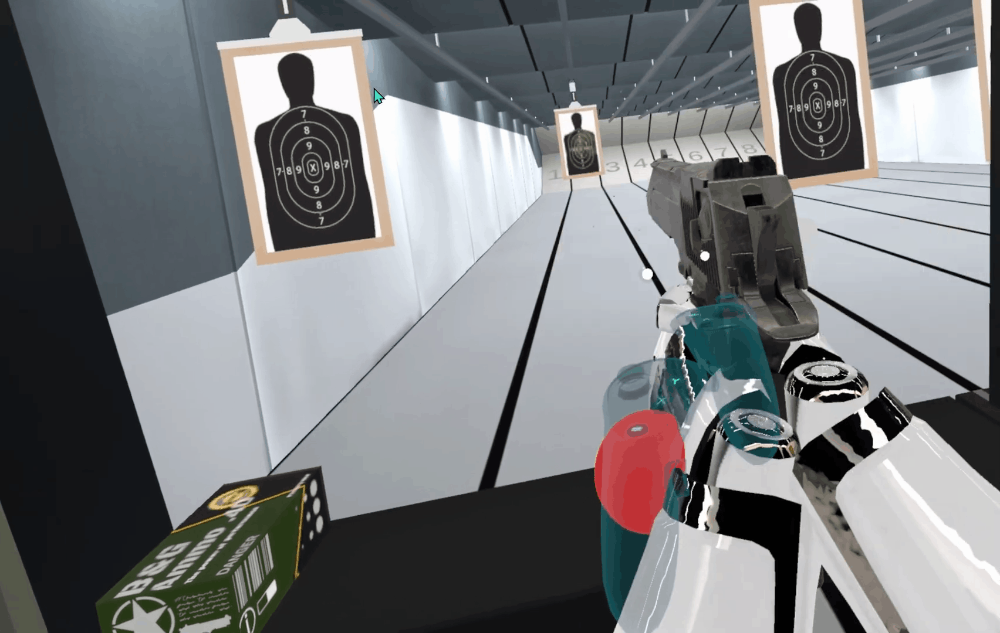
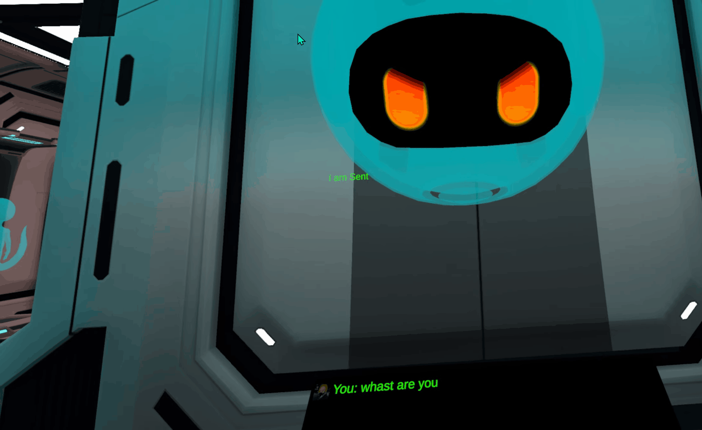
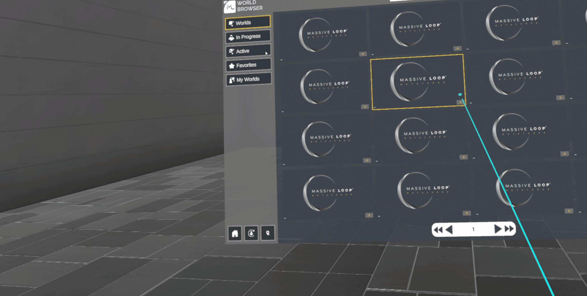

Technical Skills
Tools and Capabilities
Unity
WebXR
UI/UX Interface Design
Animation Rigging
Inverse Kinematics
C#
C++
Python
JavaScript
AI Integration
API Web Requests
Real-Time Feedback Systems
Operator-Facing VR UI
Interaction Prototyping
Blender
AI Asset Generation
Networking
Multiplayer Sync
Meta Quest Development
Web Development
Documentation
Scene Optimization
VR Projects
Hover to play

VR Training
Forklift Training Simulation
A VR training simulation built around guided task flow, hazard awareness, and clear in-headset feedback for operational decision-making.
Hover to play
VR Interaction

Gun Range
A VR interaction project focused on responsive control handling, UI feedback, and fast user response inside an active simulation space.
Hover to play
VR AI Chat

Xeno Lab7
A VR interface project combining buttons, text input, and conversational response flows inside an immersive lab environment.
Hover to play
VR Interface

UI Interactions
A VR interface study focused on in-world UI behavior, state visibility, and responsive operator feedback inside immersive menus.